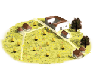
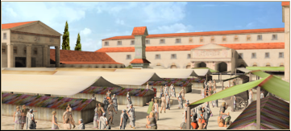
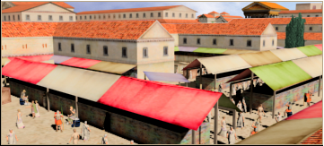

RTR: Imperium Surrectum
RTR: Imperium SurrectumBeekepers (Rural) chain
4 levels, each replacing the one before it — you upgrade in place rather than building alongside.
Beekepers (Rural) → Mead Brewer (Rural) → Wax Workshop (Rural) → Honey and Wax Exports (Rural)
Pictures are the game's own building art. Where a culture ships none of its own, the game falls back to another culture's, and that is what is shown here.
Levels at a glance
| Level | Cost | Build time | Minimum settlement | Upgrades to | Level | Cost | Build time | Minimum settlement | Upgrades to | ||
|---|---|---|---|---|---|---|---|---|---|---|---|
| Beekepers (Rural) | 1,100 | 2 | town | Mead Brewer (Rural) | Mead Brewer (Rural) | 2,200 | 3 | large town | Wax Workshop (Rural) | ||
| Wax Workshop (Rural) | 4,400 | 4 | city | Honey and Wax Exports (Rural) |  | Honey and Wax Exports (Rural) | 9,900 | 6 | large city | — |
Costs in denarii, build time in turns.
Beekepers (Rural)

A hive of activity that sweetens life, despite the occasional sting. this modest honey-gathering operation, providing sweetness to the region.
A little honey makes life sweeter, just be careful with the bees.
This small operation gathers honey from local beekeepers, providing a modest supply of the golden nectar.
"Honey from the gods” they say, though most of the time, it’s the bees that do all the work.
Beekeeping is a risky business; one wrong move, and it’s a swarm of angry bees trying to turn you into a human pincushion. But despite the danger, honey is worth every sting. It’s not just sweet, it’s medicinal, nutritious, and comes in handy for sweetening all those bitter moments in life (like when you lose a battle, but at least you’ve got honey on hand).
A small price to pay for such sweetness!
| Cost | 1,100 denarii | Build time | 2 turns | Minimum settlement | town | Upgrades to | Mead Brewer (Rural) |
What it does
- +1 population health
Honey and Wax Exports (Rural)

Exporting the taste of the gods and sweetening the empire, one sticky jar of honey at a time. - Honey is now being exported on a large scale, sweetening the region’s prosperity.
Honey from this land is flowing like wine at a victory feast, and it’s the perfect thing to brighten up anyone’s day.
From your noble’s table to the quietest of the villages, honey has a place in every kitchen and medicine chest, and this region now supplies your capital with honey, considerably improving your citizen's health.
"Gold and honey, both worth their weight in trade."
With honey production booming, the region now exports its prized nectar far and wide. Merchants eagerly seek out this honey for its sweetness, medicinal uses, and ability to never spoil.
The bees may be small, but their impact is mighty, they’ve made this region famous and rich, one drop of honey at a time. Just don’t ask how they get all that nectar, they’re a bit secretive about it. The region’s wealth is growing as fast as the beekeepers can gather the honey, though some workers claim the bees are plotting something...
| Cost | 9,900 denarii | Build time | 6 turns | Minimum settlement | large city |
What it does
- +1 population health
- +1 public order (happiness)
- +2 trade income
- +10 taxable income
Mead Brewer (Rural)

Brewing honey into happiness (and a bit of tipsiness), this has become a significant honey production site, ensuring the region is dripping with sweetness.
More bees, more honey, more stings, but the sweetness is worth it!
That’s the motto here. Mead is the drink of champions, sweet, strong, and just the thing to lift your spirits after a long day of battle or bureaucratic bickering. This larger honey operation expands on the original, with more hives and a greater production capacity.
Honey flows in abundance, sweetening both the local market and the coffers. But with great honey comes great responsibility, because the bees, naturally, don’t like to share.
So, as you sip your mead, remember: someone had to wrestle a few hundred bees for that sweet nectar. But while the workers grumble about the bee stings, they can’t deny that the rewards are as golden as the honeycomb.
| Cost | 2,200 denarii | Build time | 3 turns | Minimum settlement | large town | Upgrades to | Wax Workshop (Rural) |
What it does
- +1 population health
- +1 public order (happiness)
- +1 trade income
Wax Workshop (Rural)

A large-scale honey operation, making this region famous for its sweet export.
A kingdom built on honey? Stranger things have happened.
What’s better than honey? Beeswax, of course. Here, it's molded, shaped, and transformed into everything from candles that won’t burn down your house to writing tablets (because who wants to write on scrolls that crumble?).
This honey industry in this region has reached massive proportions, with vast numbers of hives buzzing in harmony (mostly). The sheer volume of honey being produced is staggering, and merchants from far and wide flock to this land to acquire this liquid gold.
This has truly become a sweet empire of hives producing liquid gold that even the gods envy. There may be a lot of buzzing in the air, but it’s the sound of prosperity being made, one candle at a time.
| Cost | 4,400 denarii | Build time | 4 turns | Minimum settlement | city | Upgrades to | Honey and Wax Exports (Rural) |
What it does
- +1 population health
- +1 public order (happiness)
- +1 trade income
- +10 taxable income